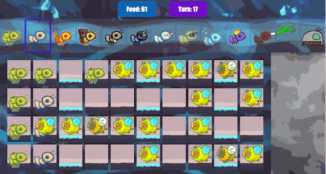
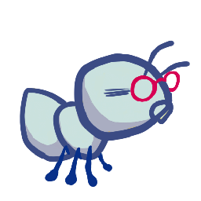
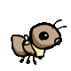
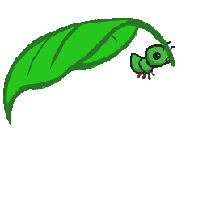
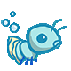

Ants Vs. SomeBees

蜜蜂来了！
打造更好的士兵
借助 inherit-ants（继承蚁）。
引言
要获得全部学分：
- 在周四 07/23 之前提交，并完成第 1 阶段和第 2 阶段。
- 在周二 07/28 之前提交，并完成所有阶段。
按顺序解题，因为后面的一些题目依赖前面的题目。
整个项目可以两人合作完成。
在周一 07/27 之前提交整个项目，可以获得 1 分加分。
在这个项目中，你将创建一款名为 Ants Vs. SomeBees 的 塔防 游戏。你要用能召集到的最勇敢的蚂蚁来充实你的蚁群。你的蚂蚁必须保护蚁后，抵御入侵你领地的邪恶蜜蜂。向蜜蜂扔足够的叶子来激怒它们，它们就会被消灭。如果你没能充分骚扰这些空中入侵者，你的蚁后就会在蜜蜂的怒火中丧命。这款游戏的灵感来自 PopCap Games 的 植物大战僵尸。
本项目采用面向对象编程范式，重点关注 Composing Programs 第 2.5 章 中的内容。项目还涉及对一个大型程序的理解、扩展和测试。
下载起始文件
ants.zip 压缩包中包含若干文件，但你所有的修改都将在 ants.py 中进行。
ants.py：Ants Vs. SomeBees 的游戏逻辑ants_plans.py：每个难度级别的详细设置ucb.py：实用工具函数- gui.py：Ants Vs. SomeBees 的图形用户界面（GUI）。
ok：自动评分程序proj3.ok：ok配置文件tests：ok使用的测试目录libs：gui.py使用的库目录static：gui.py使用的图像和文件目录templates：存放gui.py所使用的 HTML 模板的目录
事务安排
你需要提交以下文件：
ants.py
对于我们要求你完成的函数，我们可能会提供一些初始代码。如果你不想使用这些代码，可以删掉它们，从零开始写。你也可以按自己的需要添加新的函数定义。
但是，请不要修改任何其他函数，也不要编辑上面未列出的文件，否则你的代码可能无法通过自动评分程序的测试。另外，请不要改动任何函数签名（名称、参数顺序或参数个数）。
在整个项目中，你都应该测试代码的正确性。经常测试是个好习惯，这样容易定位问题。但也不要测试得过于频繁，要留出时间把问题想清楚。
我们提供了一个名为 ok 的自动评分程序，帮助你测试代码并跟踪进度。第一次运行时，它会要求你通过网页浏览器登录 Ok 账号，请照做。每次运行 ok，它都会把你的工作和进度备份到我们的服务器上。
ok 的主要用途是测试你的实现。
如果你想交互式地测试代码，可以运行
python3 ok -q [question number] -i并填入对应的题目编号（例如
01）。它会运行该题目的测试，直到你第一个失败的测试为止，然后让你有机会交互式地测试自己写的函数。
你也可以使用 OK 的调试打印功能，只要在 print 语句前加上 "DEBUG:"。例如，如果你想查看变量 x 的值，可以这样写：
print(f"DEBUG: x is {x}")
这样终端就会输出内容，而不会因为多出来的输出导致 OK 测试失败。
游戏
一局 Ants Vs. SomeBees 由一系列回合组成。每个回合中，可能会有新的蜜蜂进入蚂蚁领地。接着，新蚂蚁会被放置下来保卫领地。最后，所有昆虫（先蚂蚁，后蜜蜂）依次执行各自的动作。蜜蜂要么尝试向隧道尽头移动，要么蛰刺挡在路上的蚂蚁。蚂蚁则根据类型执行不同的动作，比如采集更多食物，或者向蜜蜂投掷树叶。当某只蜜蜂到达隧道尽头（蚂蚁失败）、蜜蜂摧毁了 QueenAnt（如果存在，蚂蚁失败），或者整支蜜蜂舰队被消灭（蚂蚁获胜）时，游戏结束。

核心概念
领地。这里是游戏发生的地方。领地由若干个 Place 链接而成，形成蜜蜂穿行的隧道。领地还拥有一定数量的食物，放置蚂蚁到隧道中需要消耗这些食物。
地点。一个地点与另一个地点相连，构成隧道。玩家可以在每个地点中放入一只蚂蚁。不过，同一个地点里可以有多只蜜蜂。
蜂巢。这里是蜜蜂诞生的地方。蜜蜂离开蜂巢，进入蚂蚁领地。
蚂蚁。玩家通过从屏幕顶部的可用蚂蚁类型中进行选择，把蚂蚁放入领地。
每种蚂蚁执行不同的动作，放置时所需的领地食物也不同。两种最基础的蚂蚁是 HarvesterAnt 和 ThrowerAnt：前者每个回合为领地增加一点食物，后者每个回合向一只蜜蜂投掷树叶。你还要实现更多种类的蚂蚁！
蜜蜂。每个回合，如果前方没有蚂蚁挡路，蜜蜂就前进到隧道中的下一个地点；否则它就蛰刺挡路的蚂蚁。只要有至少一只蜜蜂到达隧道尽头，蜜蜂就获胜。除了橙色的蜜蜂之外，还有造成双倍伤害的黄色黄蜂，以及相当难以消灭的绿色 boss 蜂。
核心类
上面描述的每个概念都有一个对应的类来封装该概念的逻辑。下面是本游戏中涉及的主要类的概要：
GameState：表示领地以及游戏的一些状态信息，包括当前有多少食物可用、已经过去多少时间、AntHomeBase在哪里，以及游戏中的所有Place。Place：表示一个容纳昆虫的地点。同一个地点中最多只能有一只Ant，但可以有很多只Bee。Place对象的左侧有exit，右侧有entrance，它们本身也是 place。 蜜蜂通过移动到每个Place的exit来穿过隧道，从而抵达下一个Place。Hive：表示Bee出发的地点（位于隧道的右侧）。AntHomeBase：表示Ant所保卫的地点（位于隧道的左侧）。如果Bee到达这里，它们就赢了 :(Insect：Ant和Bee的基类。每只昆虫都有一个health属性，表示其剩余生命值，还有一个place属性，表示它当前所在的Place。每个回合中，游戏中每只存活的Insect都会执行自己的动作。Ant：表示蚂蚁。每个Ant子类都有特殊的属性或特殊的动作，使它区别于其他Ant类型。例如，HarvesterAnt为领地获取食物，而ThrowerAnt攻击Bee。 每种蚂蚁类型还有一个food_cost属性，表示部署一只该类型的蚂蚁需要多少花费。Bee：表示蜜蜂。每个回合，如果 Bee 当前所在的Place没有被蚂蚁阻挡，它就移动到该Place的exit；否则，它蛰刺占据其当前Place的蚂蚁。
游戏布局
下面是 GameState 的可视化图示。

为了帮助你可视化所有这些类是如何组合在一起的，here 是一张包含所有类及其继承关系的示意图。
第一阶段：基础玩法
在第一阶段，你将完成相应的实现，使游戏能够用两种基础蚂蚁进行基础玩法：HarvesterAnt 和 ThrowerAnt。
问题 0
读完整份 ants.py 文件之后，运行下面这条 ok 命令来回答一组概念性问题：
python3 ok -q 00 -u如果在回答这些问题时卡住了，你可以再读一遍 ants.py，或者在 Ed 上提问。
关于解锁测试的说明： 如果你想在完成解锁测试之后回顾解锁题目， 可以前往
tests文件夹（位于ants文件夹内）。 例如，解锁 Problem 0 之后， 你可以在tests/00.py中回顾该解锁测试。
题目 1
Part A：目前，放置任何类型的 Ant 都没有花费，因此游戏毫无挑战性。基类 Ant 的 food_cost 为零。请按照下表中“Food Cost”一列的值，为 HarvesterAnt 和 ThrowerAnt 覆盖这个类属性。
| 类 | 食物花费 | 初始生命值 |
 HarvesterAnt |
2 | 1 |
 ThrowerAnt |
3 | 1 |
Part B：既然放置 Ant 需要花费食物，我们就得能够收集更多食物！为了解决这个问题，请实现 HarvesterAnt 类。HarvesterAnt 是一种 Ant，它的动作是把 gamestate.food 增加 1。
写代码之前，先解锁测试，检验你对题目的理解：
python3 ok -q 01 -u解锁完成后，开始实现你的解法。你可以用下面的命令检查正确性：
python3 ok -q 01题目 2
在这个问题中，你将通过添加记录 entrance 的代码来完成 Place.__init__。目前，一个 Place 只记录自己的 exit。我们希望 Place 也能记录自己的 entrance。一个 Place 只需记录一个 entrance。
当 Ant 需要查看隧道中位于它前方的 Bee 时，记录 entrance 会很有用。
然而，直接把 entrance 传给 Place 的构造函数会带来麻烦：我们必须在创建 Place 之前就同时拥有 exit 和 entrance！（这是一个 先有鸡还是先有蛋 问题。）为了绕开这个问题，我们改用下面的方式来记录 entrance。Place.__init__ 应遵循以下逻辑：
- 新建的
Place一开始总是把它的entrance设为None。 - 如果该
Place有exit，那么把exit的entrance设为该Place。
提示：记住，调用
__init__方法时，第一个参数self绑定的是新创建的对象。
提示：如果觉得混乱，试着画两个并排的
Place。在 GUI 中，一个 place 的entrance在它右侧，而exit在它左侧。
提示：记住
Place并不存放在列表里，所以你不能通过索引来访问它们。这意味着你不能用类似colony[index + 1]的写法来访问相邻的Place。那么，你怎样才能从一个 place 移动到另一个 place 呢？
写代码之前，先解锁测试，检验你对题目的理解：
python3 ok -q 02 -u解锁完成后，开始实现你的解法。你可以用下面的命令检查正确性：
python3 ok -q 02题目 3
为了让 ThrowerAnt 能够投掷树叶，它必须知道该击中哪只 Bee。ThrowerAnt 类中已提供的 nearest_bee 方法实现只允许 ThrowerAnt 击中同一个 Place 中的 Bee。你的任务是修复它，使得 ThrowerAnt 会对位于它前方、且仍不在 Hive 中的最近的 Bee 执行 throw_at。这包括与 ThrowerAnt 处于同一个 Place 的 Bee。
提示：所有
Place都有一个is_hive属性，当该 place 是Hive时它被设为True，否则为False。
修改 nearest_bee，使它从最近的、含有 Bee 的 Place 中随机返回一只 Bee。你的实现应遵循以下逻辑：
- 从
ThrowerAnt当前所在的Place开始。 - 如果该
Place含有一只或多只Bee，就随机返回其中一只。否则，检查位于它前方的下一个Place（存储为当前Place的 entrance）。 - 重复这个过程，直到找到并返回一只
Bee。如果没有可供攻击的Bee，就返回None。 - 确保
nearest_bee永远不会返回Hive中的Bee。
提示：
ants.py中提供的random_bee函数会从Bee列表中随机返回一只Bee，如果列表为空则返回None。
提示：提醒一下，如果某个
Place中没有Bee，那么该Place实例的bees属性会是一个空列表。
提示：觉得测试用例不好想象？ 试着把它们画在纸上！ 游戏布局 中提供的示例图展示了这个问题的第一个测试用例。
写代码之前，先解锁测试，检验你对题目的理解：
python3 ok -q 03 -u解锁完成后，开始实现你的解法。你可以用下面的命令检查正确性：
python3 ok -q 03运行游戏
实现 nearest_bee 之后，ThrowerAnt 应该能够对位于它前方、且仍不在 Hive 中的 Bee 执行 throw_at。
现在你可以试试自己写好的东西了。要启动图形界面游戏，请运行：
python3 gui.py启动图形界面版本之后，游戏（通常）可以通过 http://127.0.0.1:31415/ 访问。
这个游戏有几个选项，你在整个项目中都会用到，可以用 python3 gui.py --help 查看。
usage: gui.py [-h] [-d DIFFICULTY] [-w] [--food FOOD]
Play Ants vs. SomeBees
optional arguments:
-h, --help show this help message and exit
-d DIFFICULTY sets difficulty of game (test/easy/normal/hard/extra-hard)
-w, --water loads a full layout with water
--food FOOD number of food to start with when testing你可以刷新网页来重新开始游戏，但如果你修改了代码，就需要终止 gui.py 并重新运行它。要终止 gui.py，可以在终端中按 Ctrl + C。
你不能同时打开多个同一 Ants GUI 的标签页，否则它们都会报错。
第二阶段：更多蚂蚁！
既然你已经用两种 Ant 实现了基础玩法，下面我们来给蚂蚁攻击蜜蜂的方式增添一些花样。从这个问题开始，你将实现若干种具有不同攻击策略的 Ant。
在这些小节中每实现完一个 Ant 子类后，你都需要把它的 implemented 类属性设为 True，这样该类型的 ant 才会出现在 GUI 中。你可以随意用每种新蚂蚁试玩一下游戏，检验功能！
从现在起，使用后续所有蚂蚁时，都可以试试 python3 gui.py，在多隧道布局中对抗一大群蜜蜂；如果你想要真正的挑战，可以试试 -d hard 或 -d extra-hard！如果蜜蜂多得消灭不完，你可能需要创造一些新的蚂蚁。
题目 4
ThrowerAnt 对蜜蜂来说是强有力的威胁，但它的 food_cost 很高。在这个问题中，你将实现 ThrowerAnt 的两个子类，它们花费更低，但在投掷距离上有所限制：
LongThrower只能对经过至少 5 次entrance转换之后找到的Bee执行throw_at。换句话说，它无法击中与它处于同一个Place的Bee，也无法击中它前方前 4 个Place中的Bee。如果存在两只Bee，一只离LongThrower太近，另一只在它的射程之内，那么LongThrower应该只对较远、且在它射程之内的那只Bee投掷，而不是试图击中较近的那只。ShortThrower只能对经过至多 3 次entrance转换之后找到的Bee执行throw_at。换句话说，它不能对位于它前方超过 3 个Place之外的任何Bee投掷。
这两种特殊的投掷者都无法对恰好相距 4 个 Place 的 Bee 执行 throw_at。
| 类 | 食物花费 | 初始生命值 |
 ShortThrower |
2 | 1 |
 LongThrower |
2 | 1 |
要实现这些新的投掷型蚂蚁，你的 ShortThrower 和 LongThrower 类应该继承基类 ThrowerAnt 中的 nearest_bee 方法。
接下来，修改 ThrowerAnt 中的 nearest_bee 方法，让它引用 lower_bound 和 upper_bound 属性，并且只有当某个 Place 处于所给边界的范围之内时，才从该 Place 返回 Bee。这是必要的，因为 ShortThrower 和 LongThrower 蚂蚁能够对 Bee 执行 throw_at 的 Place 范围，分别受 upper_bound 和 lower_bound 的限制。
请确保在 ThrowerAnt 类中给 lower_bound 和 upper_bound 属性设置合适的值，使 ThrowerAnt 的行为保持不变。然后实现子类 LongThrower 和 ShortThrower，并给它们设置适当受限的范围。
你不应该在 ThrowerAnt、ShortThrower 和 LongThrower 之间重复任何代码。
重要： 请确保你的类属性名为
upper_bound和lower_bound。 测试会直接引用这些属性名，如果你给这些属性用了别的名字，就会报错。
提示：
float('inf')返回一个表示为 float 的无穷大正值，它可以与其他数字进行比较。
提示：
lower_bound和upper_bound应表示一个闭区间。
别忘了把 LongThrower 和 ShortThrower 的 implemented 类属性设为 True。
写代码之前，先解锁测试，检验你对题目的理解：
python3 ok -q 04 -u写完代码后，测试你的实现（重新运行 03 的测试，确保它们仍然通过）：
python3 ok -q 03
python3 ok -q 04👩🏽💻👨🏿💻 结对编程？ 记得在 driver 和 navigator 两个角色之间轮换。 driver 负责操作键盘； navigator 负责观察、提问并提出想法。
题目 5
实现 FireAnt，它在受到伤害时会造成伤害。具体来说，如果它受到 damage_taken 点生命值的伤害，它就对所在 place 中的所有 Bee 造成 damage_taken 点伤害（这称为反射伤害）。如果它死亡，还会额外造成一份由其 damage 属性指定数值的伤害，作用于所在 place 中的所有 Bee。FireAnt 类中 damage 属性的默认值为 3。
为此，请覆盖 FireAnt 的 reduce_health 方法。
你覆盖的方法应调用从超类（Ant）继承来的 reduce_health 方法（Ant 又从它的超类 Insect 继承该方法），以减少当前 FireAnt 实例的生命值。
对 FireAnt 实例调用继承来的 reduce_health 方法，会把这只昆虫的生命值减少给定的 damage_taken，并在其生命值降到 0 或以下时把它从所在 place 中移除。
提示： 不要调用
self.reduce_health， 否则你会陷入递归循环。（你能看出为什么吗？）
不过，你的方法还需要包含反射伤害的逻辑：
- 确定反射伤害的数值：
从施加在
FireAnt身上的damage_taken开始， 如果该蚂蚁的生命值已降到 0 或以下，再加上damage。 - 对于该 place 中的每只
Bee，调用其相应的reduce_health方法，用反射伤害的总量对它们造成伤害。
重要： 记住，任何
Ant一旦失去全部生命值，就会被从它的Place中移除， 所以要特别留意reduce_health中逻辑的先后顺序。
| 类 | 食物花费 | 初始生命值 |
 FireAnt |
5 | 3 |
重要：对蜜蜂造成伤害可能会导致它被从所在 place 中移除；当一只昆虫死亡时，它会被移出当前所在的 place。如果你遍历一个列表，却同时改变该列表的内容，你 可能无法访问到所有元素。 可以通过复制一份列表来避免这种情况。 你可以使用列表切片，或者使用内置的
list函数，以确保原列表不受影响。
>>> s = [1,2,3,4]
>>> s[:]
[1, 2, 3, 4]
>>> list(s)
[1, 2, 3, 4]
>>> (s[:] is not s) and (list(s) is not s)
True实现完 FireAnt 之后，给它一个值为 True 的 implemented 类属性。
注意： 即使你覆盖了超类的
reduce_health函数 （Ant.reduce_health）， 你仍然可以在实现中通过调用它来使用这个方法。
写代码之前，先解锁测试，检验你对题目的理解：
python3 ok -q 05 -u解锁完成后，开始实现你的解法。你可以用下面的命令检查正确性：
python3 ok -q 05你也可以通过玩一两局游戏来测试你的程序！FireAnt 被蛰时，应该消灭所有与它同处一地的 Bee。要以十点食物开始一局游戏（便于测试）：
python3 gui.py --food 10题目 6
我们要通过实现 WallAnt 来为我们光荣的大本营增添一些保护，这种蚂蚁每个回合什么都不做。WallAnt 很有用，因为它有很高的生命值。
| 类 | 食物花费 | 初始生命值 |
 WallAnt |
4 | 4 |
与之前的蚂蚁不同，我们没有为你提供 class 语句。
请从零开始实现 WallAnt 类。给它一个值为 'Wall' 的 name 类属性
（以便图形界面正常工作）和一个值为 True 的 implemented 类属性
（以便你可以在游戏中使用它）。
提示：请确保你也实现了
__init__方法， 让WallAnt一开始就具有合适的生命值！
写代码之前，先解锁测试，检验你对题目的理解：
python3 ok -q 06 -u解锁完成后，开始实现你的解法。你可以用下面的命令检查正确性：
python3 ok -q 06题目 7
实现 HungryAnt，它会从所在 Place 中随机选择一只 Bee，对这只 Bee 造成等于其生命值的伤害，把它整个吃掉。吃掉一只 Bee 之后，HungryAnt 必须花 3 个回合咀嚼，之后才能再次进食。在 HungryAnt 咀嚼期间，它无法吃掉（对任何 Bee 造成伤害）。如果它所在的 place 中没有可供吃掉的 Bee，HungryAnt 就什么都不做。
我们没有为你提供类声明头。
请从零开始实现 HungryAnt 类。给它一个值为 'Hungry' 的 name 类属性
（以便图形界面正常工作）和一个值为 True 的 implemented 类属性
（以便你可以在游戏中使用它）。
提示： 当一只
Bee被吃掉时，应把它的生命值减少相当于它当前生命值的数量。
| 类 | 食物花费 | 初始生命值 |
 HungryAnt |
4 | 1 |
给 HungryAnt 一个 chew_cooldown 类属性，用来存储 HungryAnt 咀嚼所需的回合数（设为 3）。同时，给每个 HungryAnt 一个实例属性 cooldown，用来计数它还剩多少个回合要咀嚼，初始化为 0，因为一开始它还没吃任何东西。你也可以把 cooldown 理解为距离 HungryAnt 能再吃一只 Bee 还有多少个回合。
实现 HungryAnt 的 action 方法：首先检查它是否正在咀嚼；如果是，就递减它的 cooldown。否则，吃掉它所在 Place 中随机的一只 Bee，把该 Bee 的生命值减到 0。吃掉 Bee 时一定要设置 cooldown！
提示：除了
action方法之外，也请确保实现__init__方法，以定义所需的实例变量，并让HungryAnt一开始就具有合适的生命值！
写代码之前，先解锁测试，检验你对题目的理解：
python3 ok -q 07 -u解锁完成后，开始实现你的解法。你可以用下面的命令检查正确性：
python3 ok -q 07👩🏽💻👨🏿💻 结对编程？ 现在是交换角色的好时机。交换角色能确保你们双方都能从各自角色的学习体验中获益。
题目 8
目前，我们的蚂蚁相当脆弱。我们想提供一种办法，帮助它们在蜜蜂的猛攻下坚持得更久。有请 ProtectorAnt。
| 类 | 食物花费 | 初始生命值 |
 ProtectorAnt |
4 | 2 |
为了更容易地实现 ProtectorAnt，我们会把这个问题拆成 3 个小部分。
在每一部分中，我们将分别修改 ContainerAnt 类、Ant 类或 ProtectorAnt 类。
注意： 我们把 Question 8 分成了三个不同的小部分。我们建议在写任何代码之前，先做完每个小部分的解锁测试。 每个小部分都会单独测验，各占 1 分，整道题共 3 分。
问题 8a
首先，我们会定义并使用一个 ContainerAnt 父类，稍后用它来实现 ProtectorAnt。
ProtectorAnt 与普通蚂蚁的不同之处在于它是一个 ContainerAnt；它可以在同一个 Place 里容纳并保护另一只蚂蚁。当一只 Bee 蛰刺某个 Place 中的蚂蚁，而该 Place 里有一只蚂蚁容纳着另一只蚂蚁时，只有外层容器会受到伤害。容器内的蚂蚁仍然可以执行它原本的动作。如果容器死亡，被容纳的蚂蚁仍然留在该 place 中（之后就可以被伤害了）。
每个 ContainerAnt 都有一个实例属性 ant_contained，用来存储它所容纳的蚂蚁。这只蚂蚁 ant_contained 初始为 None，表示目前还没有存储任何蚂蚁。请实现 store_ant 方法，把 ContainerAnt 的 ant_contained 实例属性设为传入的 ant 参数。然后实现 ContainerAnt 的 action 方法。该方法要确保：如果我们当前的 ContainerAnt 容纳着一只蚂蚁，就执行 ant_contained 的动作。
此外，为了确保一个容器和它容纳的蚂蚁可以同时占据同一个 Place（每个 Place 最多两只蚂蚁），但前提是其中恰好只有一只是容器，我们可以创建一个 can_contain 方法。
Ant 类中已经有一个 can_contain 方法，但它总是返回 False。
请在 ContainerAnt 中覆盖 can_contain 方法，让它接受一只蚂蚁 other 作为参数，并在以下情况下返回 True：
- 这个
ContainerAnt尚未容纳另一只蚂蚁。 - 另一只蚂蚁不是容器。
提示： 你可能会发现，每只
Ant都有的is_container属性对于检查某只Ant是否为容器很有用。
写代码之前，先解锁测试，检验你对题目的理解：
python3 ok -q 08a -u解锁完成后，开始实现你的解法。你可以用下面的命令检查正确性：
python3 ok -q 08a问题 8b
接下来，我们将在 Ant 类中进行修改。
修改 Ant.add_to，按照以下规则允许一个容器和它容纳的蚂蚁占据同一个 place：
- 如果原本占据某个 place 的
Ant能can_contain正在被添加的Ant， 那么两只Ant都占据该 place，并且原来的Ant容纳正在被添加的Ant。 - 如果正在被添加的
Ant能can_contain原本位于该位置的Ant，那么两只Ant都占据该 place，并且正在被添加的Ant容纳原来的Ant。 - 如果两只
Ant都无法can_contain对方，就抛出与之前相同的AssertionError（即起始代码中已有的那个）。
重要：如果某个
Place中有两只Ant， 那么该Place实例的ant属性应指向容器蚂蚁， 并且容器蚂蚁应容纳那只非容器蚂蚁。
提示： 你还应该利用你写的
can_contain方法， 避免重复代码。
注意： 如果你通过 VSCode 的 Pylance 扩展为
Ant.add_to收到“unreachable code”警告， 可以放心地忽略这个特定的警告， 因为这段代码实际上会被执行 （这种情况下该警告并不准确）。
写代码之前，先解锁测试，检验你对题目的理解：
python3 ok -q 08b -u解锁完成后，开始实现你的解法。你可以用下面的命令检查正确性：
python3 ok -q 08b问题 8c
最后，我们可以着手实现 ProtectorAnt 类了。
添加一个 ProtectorAnt.__init__，用来设置 ProtectorAnt 的初始生命值。
我们不需要在这里创建 action 方法，因为 ProtectorAnt 类从 ContainerAnt 类继承了它。
另请注意，ProtectorAnt 不造成任何伤害。
实现完 ProtectorAnt 之后，
给它一个值为 True 的 implemented 类属性。
写代码之前，先解锁测试，检验你对题目的理解：
python3 ok -q 08c -u解锁完成后，开始实现你的解法。你可以用下面的命令检查正确性：
python3 ok -q 08c题目 9
ProtectorAnt 提供了很好的防御，不过人们说最好的防守就是进攻。TankAnt 是一种 ContainerAnt，它保护所在 place 中的一只蚂蚁，并且每个回合对它所在 Place 中的所有 Bee 造成 1 点伤害。像任何 ContainerAnt 一样，TankAnt 允许它所容纳的蚂蚁每个回合执行自己的动作。
| 类 | 食物花费 | 初始生命值 |
 TankAnt |
6 | 2 |
我们没有为你提供类声明头。
请从零开始实现 TankAnt 类。给它一个值为 'Tank' 的 name 类属性
（以便图形界面正常工作）和一个值为 True 的 implemented 类属性
（以便你可以在游戏中使用它）。
你不需要修改 TankAnt 类之外的任何代码。如果你发现自己需要在别处做改动，那就想想怎样把上一题的代码写得不仅适用于 ProtectorAnt 和 TankAnt 对象，也适用于一般的 ContainerAnt。
提示：你需要从
TankAnt的父类覆盖的方法只有__init__和action。
提示：和
FireAnt一样，对蜜蜂造成伤害可能会导致它被从所在 place 中移除。
写代码之前，先解锁测试，检验你对题目的理解：
python3 ok -q 09 -u解锁完成后，开始实现你的解法。你可以用下面的命令检查正确性：
python3 ok -q 09检查点自测
检查确认你完成了阶段 1 和阶段 2 中的所有题目：
python3 ok --score运行 ok 命令时，你仍然会看到一些测试处于锁定状态，因为你还没有完成整个项目。只要你完成到当前为止的所有题目，就能拿到 checkpoint 的满分。
恭喜！你已经完成了本项目的第一阶段和第二阶段！
第三阶段：水域与力量
在最后一个阶段，你将通过引入一种新类型的地点，以及能够占据这种地点的新蚂蚁，为游戏添加最后一记猛料。其中一种蚂蚁是所有蚂蚁中最重要的那只：蚁后！
题目 10
让我们给领地加点水！目前只有两种地点：Hive 和普通的 Place。为了让游戏更有趣，我们要创建一种名为 Water 的新 Place 类型。
只有防水的 Insect 才能被放入 Water 中。为了判断一只 Insect 是否防水，请给 Insect 类添加一个名为 is_waterproof 的新类属性，设为 False。由于 Bee 会飞，它们的 is_waterproof 属性为 True，覆盖了继承来的值。
现在，为 Water 实现 add_insect 方法。首先，无论该 Insect 是否防水，都把它添加到该 Place 中。然后，如果该 Insect 不防水，就把它的生命值减到 0。不要重复程序其他地方的代码，
而应使用已经定义好的方法。
写代码之前，先解锁测试，检验你对题目的理解：
python3 ok -q 10 -u解锁完成后，开始实现你的解法。你可以用下面的命令检查正确性：
python3 ok -q 10完成这个问题后，玩一局包含水的游戏。要使用包含水的 wet_layout，请在启动游戏时加上 --water 选项（简写为 -w）。
python3 gui.py --water👩🏽💻👨🏿💻 结对编程？ 记得在 driver 和 navigator 两个角色之间轮换。 driver 负责操作键盘； navigator 负责观察、提问并提出想法。
题目 11
目前还没有任何蚂蚁能放在 Water 上。实现 ScubaThrower，它是 ThrowerAnt 的子类，花费更高且防水，除此之外与它的基类完全相同。ScubaThrower 被放入 Water 时不应失去生命值。
| 类 | 食物花费 | 初始生命值 |
 ScubaThrower |
6 | 1 |
我们没有为你提供类声明头。请从零开始实现 ScubaThrower 类。给它一个值为 'Scuba' 的 name 类属性（以便图形界面正常工作），并记得把 implemented 类属性设为 True（以便你可以在游戏中使用它）。
写代码之前，先解锁测试，检验你对题目的理解：
python3 ok -q 11 -u解锁完成后，开始实现你的解法。你可以用下面的命令检查正确性：
python3 ok -q 11问题 12
最后，实现 QueenAnt。蚁后是一只 ThrowerAnt，她用自己的勇敢激励同伴蚂蚁。除了标准的 ThrowerAnt 动作之外，QueenAnt 每次执行动作时，都会使她所在隧道中位于她身后的所有蚂蚁的伤害翻倍。不过，一只蚂蚁的伤害一旦翻倍，就不能再次翻倍。试着想个办法来记录某只蚂蚁的伤害是否已经翻倍（提示：使用实例属性！）
注意：
FireAnt的反射伤害不应翻倍，只有它的生命值降到 0 时造成的额外伤害才翻倍。
| 类 | 食物花费 | 初始生命值 |
 QueenAnt |
7 | 1 |
然而，能力越大，责任越大。如果 QueenAnt 的生命值降到 0，蚂蚁就输了。你需要在 QueenAnt 中覆盖 Insect.reduce_health，并在这种情况下调用 ants_lose()，以告知模拟器游戏已经结束。（如果任何蜜蜂到达隧道尽头，蚂蚁同样会输。）
提示：要让位于她身后的所有蚂蚁的伤害翻倍，你可以填写
Ant类中定义的double方法，然后在QueenAnt类中调用它。
提示： 在让蚂蚁的伤害翻倍时， 请记住一个
Place中可能不止一只蚂蚁， 比如容器蚂蚁容纳另一只蚂蚁的情况。
提示： 记住，
QueenAnt的reduce_health方法在超类的reduce_health方法之外， 还额外需要调用ants_lose()。 我们怎样才能既完成超类方法的所有工作，又不重复代码呢？
提示： 你可以从蚁后的
place.exit开始，然后反复回到前一个Place的exit， 从而找到QueenAnt身后隧道中的每个Place。 隧道末端Place的exit为None。
写代码之前，先解锁测试，检验你对题目的理解：
python3 ok -q 12 -u解锁完成后，开始实现你的解法。你可以用下面的命令检查正确性：
python3 ok -q 12项目提交
对所有题目运行 ok，确认测试都已解锁并通过：
python3 ok你也可以查看项目每一部分的得分：
python3 ok --score你现在已经完成整个项目了！如果还没有，你应该试着玩一玩这个游戏！
python3 gui.py [-h] [-d DIFFICULTY] [-w] [--food FOOD]- -h = help
- -d = 难度（easy/normal/hard/extra-hard）
- -w = 水量
- -food = 初始食物数量（默认为 2）
额外挑战（选做）
注意： 这些题目是选做的，不计任何分数。
实现最后两种投掷蚁，它们不造成任何伤害，而是对它们用 throw_at 命中的 Bee 实例的 action 方法施加一个临时效果。这个“状态”会持续若干回合，之后便不再生效。
题目 EC 1（0 分）
我们将实现一只新的蚂蚁 SlowThrower，它继承自 ThrowerAnt。
SlowThrower 会向一只蜜蜂投掷黏稠的糖浆，使其减速 5 个回合。当蜜蜂被减速时，如果 gamestate.time 为偶数，它会执行正常的 Bee 行动；否则不采取任何行动（既不移动也不蜇人）。如果一只蜜蜂在被减速期间再次被糖浆击中，它会从最近一次被糖浆击中的时刻起重新减速 5 个回合。也就是说，如果一只蜜蜂被糖浆击中，经过 2 个回合后又再次被糖浆击中，那么它会从第二次被击中起再减速 5 个回合。因此它总共会被减速 7 个回合（而不是 10 个！）。
| 类 | 食物花费 | 初始生命值 |
 SlowThrower |
6 | 1 |
为了完成这个 SlowThrower 的实现，你需要正确设置它的类属性，并在 SlowThrower 中实现 throw_at 方法。
重要限制：本题中你不得修改 SlowThrower 类之外的任何代码。这意味着你不能直接修改 Bee.action 方法。我们的测试会检查这一点。
提示：看看
SlowThrower的父类ThrowerAnt。ThrowerAnt的action方法会调用throw_at，而你应该在SlowThrower中重写这个方法。传入SlowThrower的throw_at函数中target参数的到底是什么，为什么？target.action指的是什么？
实现提示：把
target.action赋值为一个新函数，该函数有条件地调用Bee.action。你可以创建并使用一个实例属性来记录这只蜜蜂还会被减速多少个回合。一旦减速效果结束，就应该在每个回合都重新调用Bee.action。
写代码之前，先解锁测试，检验你对题目的理解：
python3 ok -q EC1 -u你可以运行一些提供的测试，但它们并不全面：
python3 ok -q EC1一定要测试你的代码！你的代码应该能够对同一个目标施加多个 status（状态）；每个新的 status 都作用于该蜜蜂当前（可能已被之前影响过）的 action 方法。
题目 EC 2（0 分）
你必须正确实现题目 EC 1（SlowThrower）才能通过本题的测试。 我们将实现一只新的蚂蚁
ScaryThrower，它继承自ThrowerAnt。
ScaryThrower 会恐吓附近的一只蜜蜂，使它后退而不是前进。以下是一些需要记住的规则：
- 如果蜜蜂已经紧挨着 Hive 且无法再后退，它就不应移动。要检查蜜蜂是否紧挨着 Hive，你可能会发现
Place的is_hive实例属性很有用。 - 蜜蜂在尝试后退两次之前会一直处于恐惧状态。因此，后退效果持续两个回合。
- 如果蜜蜂被减速且
gamestate.time为奇数，它就不能尝试后退。因为此时它正被 SlowThrower 冻结！ - 一只蜜蜂一旦被吓到过一次，就再也不会被吓到了。
| 类 | 食物花费 | 初始生命值 |
 ScaryThrower |
6 | 1 |
为了完成这个 ScaryThrower 的实现，你需要正确设置它的类属性，并在 Bee 中实现 scare 方法，该方法对特定的蜜蜂施加恐惧状态。你可能还需要修改 Bee 的其他一些方法，比如 action。
写代码之前，先解锁测试，检验你对题目的理解：
python3 ok -q EC2 -upython3 ok -q EC2一定要测试你的代码！你的代码应该能够对同一个目标施加多个 status（状态）；每个新的 status 都作用于该蜜蜂当前（可能已被之前影响过）的 action 方法。
题目 EC 3（0 分）
实现 NinjaAnt，它会伤害所有经过的 Bees，但永远不会被蜇。
| 类 | 食物花费 | 初始生命值 |
 NinjaAnt |
5 | 1 |
NinjaAnt 不会阻挡飞过的 Bee 的行进路径。要实现这一行为，首先修改 Ant 类，添加一个新的类属性 blocks_path，将其设为 True，然后在 NinjaAnt 类中把 blocks_path 的值重写为 False。
其次，修改 Bee 的 blocked 方法：如果 Bee 所在位置没有 Ant，或者有 Ant 但其 blocks_path 属性为 False，就返回 False。这样 Bees 就会直接飞过 NinjaAnt。
最后，我们希望让 NinjaAnt 伤害所有飞过的 Bees。在 NinjaAnt 中实现 action 方法，按照它的 damage 属性减少与 NinjaAnt 处于同一位置的所有 Bees 的生命值。与 FireAnt 类似，你必须遍历一个可能发生变化的 bees 列表。
提示：在脑海中想象不出这些测试用例？试着把它们画在纸上！可以参考 游戏布局 中的例子。
写代码之前，先解锁测试，检验你对题目的理解：
python3 ok -q EC3 -upython3 ok -q EC3作为挑战，试着只用 HarvesterAnt 和 NinjaAnt 赢得一局游戏。
题目 EC 4（0 分）
我们已经秘密开发这只蚂蚁很久了。它太危险了，我们不得不把它锁在超级隐秘的地下金库里，但我们现在终于觉得它可以上战场测试了。在本题中，你将实现最后一只蚂蚁 —— LaserAnt，一只别具一格的 ThrowerAnt。
| 类 | 食物花费 | 初始生命值 |
 LaserAnt |
10 | 1 |
LaserAnt 会发射一束强力的激光，伤害所有胆敢站在其路径上的目标。所有类型的 Bee 和 Ant 都有被 LaserAnt 伤害的风险。当 LaserAnt 执行行动时，它会伤害其所在位置的所有 Insect（不包括它自己，但包括它的容器（如果有的话））以及它前方的 Place，不包括 Hive。
如果仅此而已，LaserAnt 就会强大到我们无法控制。LaserAnt 的基础伤害是 2。但是，LaserAnt 的激光有一些怪癖。激光每远离 LaserAnt 所在位置一个格子，就会被削弱 0.25。此外，LaserAnt 的电量有限。每当 LaserAnt 实际伤害到一个 Insect，其激光的总伤害就会下降 0.0625（1/16）。这种削弱是即时生效的，所以如果 LaserAnt 前方同一格上有两只 Bees，它对第二只 Bee 造成的伤害会更低。如果由于这些限制，LaserAnt 的伤害变为负数，那么它就直接造成 0 伤害。
在一回合内，各目标受到伤害的确切顺序无关紧要。
为了完成这只终极蚂蚁的实现，请通读 LaserAnt 类，正确设置类属性，并实现以下两个函数：
insects_in_front是一个实例方法，由action方法调用，返回一个字典，其中每个键是一个Insect，对应的值是该Insect距离LaserAnt的距离（以格子数为单位）。该字典应包含与LaserAnt处于同一位置或在其前方的所有Insects，不包括LaserAnt本身。calculate_damage是一个实例方法，接收distance，即某个昆虫距离LaserAnt实例的距离。它根据以下因素返回LaserAnt实例应当造成的伤害：Insect距离LaserAnt实例的远近。- 这个
LaserAnt已经伤害过的 Insects 数量，存储在insects_shot实例属性中。
除了实现上述方法之外，你可能还需要根据需要修改、添加或使用 LaserAnt 类中的类属性或实例属性。
重要：如果某个昆虫的生命值没有受到影响，它的生命值应当保持为整数，与它最初被创建时一样。
注意：本题没有解锁测试。
python3 ok -q EC4致谢：Tom Magrino 和 Eric Tzeng 与 John DeNero 一起开发了这个项目。还有许多其他人也为该项目做出了贡献！
插画由 Alana Tran、Andrew Huang、Emilee Chen、Jessie Salas、Jingyi Li、Katherine Xu、Meena Vempaty、Michelle Chang 和 Ryan Davis 绘制。